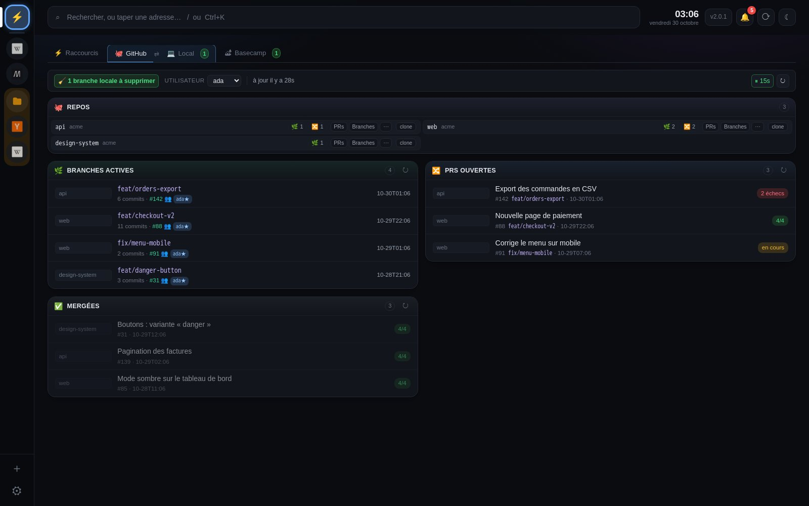
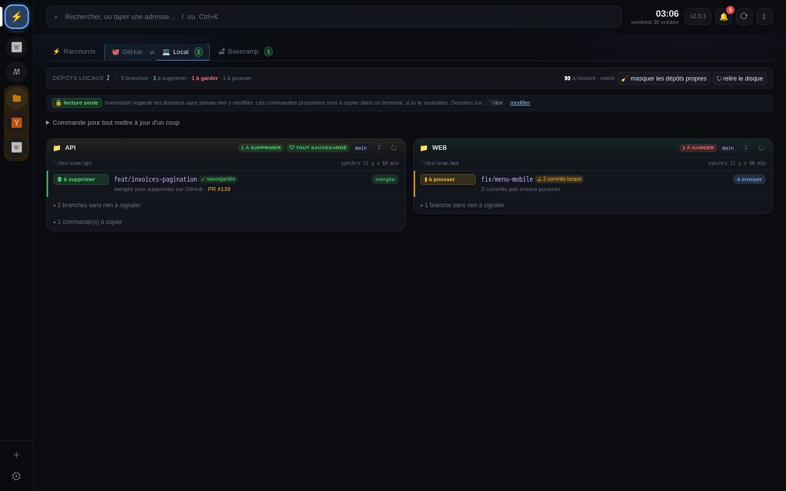
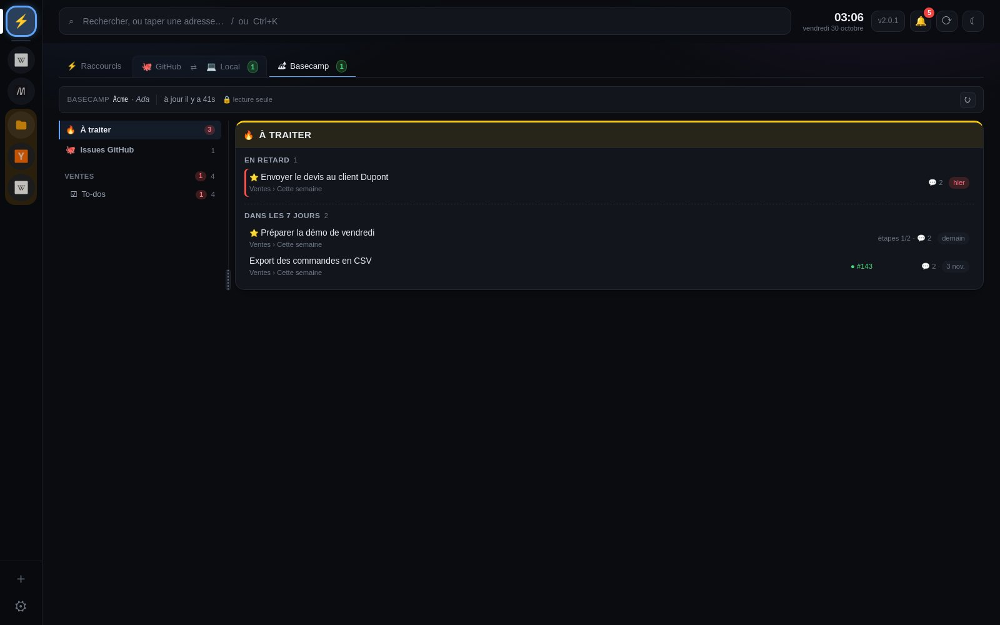
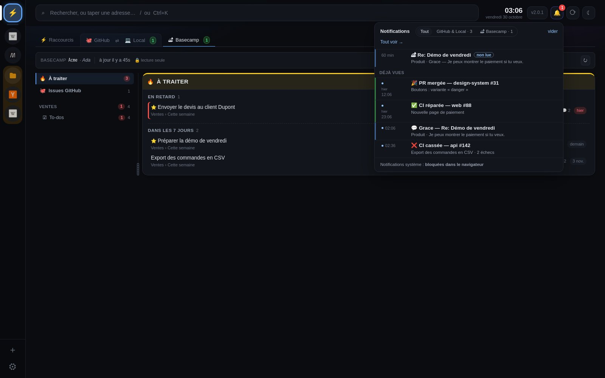
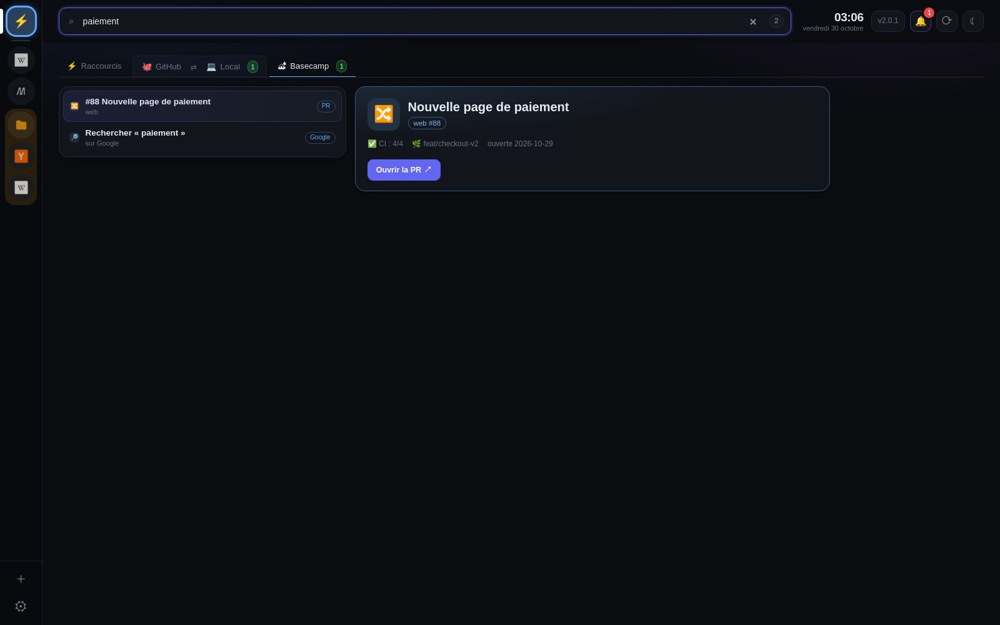

homedash
Ta page d'accueil de bureau : tes liens et notes, ton code, Basecamp, et tes sites (Gmail, Chat, Claude…) avec leurs non-lus, dans une seule appli.
Mac (Apple Silicon et Intel) et Windows · gratuit · mise à jour automatique

Ta page d'accueil de bureau : tes liens et notes, ton code, Basecamp, et tes sites (Gmail, Chat, Claude…) avec leurs non-lus, dans une seule appli.
Mac (Apple Silicon et Intel) et Windows · gratuit · mise à jour automatique

Tes liens, les plus utilisés, des notes, les infos à copier (Wi-Fi, IP…).

Tes branches, PRs et CI, sur un ou plusieurs comptes.

Les branches qui peuvent partir sans risque. Rien n'est modifié : les commandes sont à copier.

Tes tâches en retard ou à venir ; une tâche devient une issue GitHub.

CI cassée ou réparée, PR mergée, message Basecamp, nouvelle version.

/ ou ⌘K : liens, sites, repos, tâches, notes… et le web.
.dmg et glisse homedash dans Applications.Une seule fois : l'appli n'est pas signée par Apple. Les mises à jour passent ensuite toutes seules.
setup.exe.Ensuite, la carte Pour commencer de l'accueil te guide pas à pas.
Ni compte, ni statistiques, ni pisteur. Tout reste sur ta machine, sauvegardé chaque jour. Le détail.
Tes accès GitHub et Basecamp ne quittent jamais l'appli.
homedash lit, il ne modifie rien : ni tes dossiers, ni tes tâches, sauf ce que tu publies toi-même.